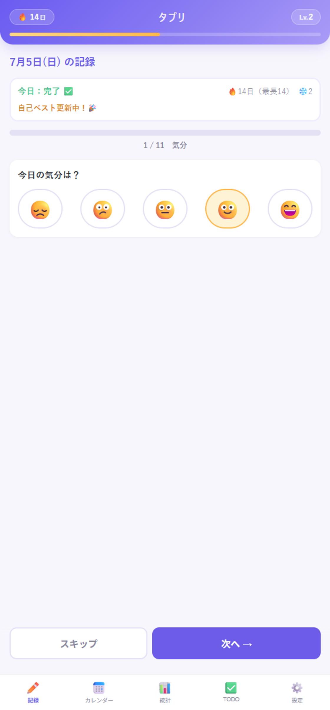
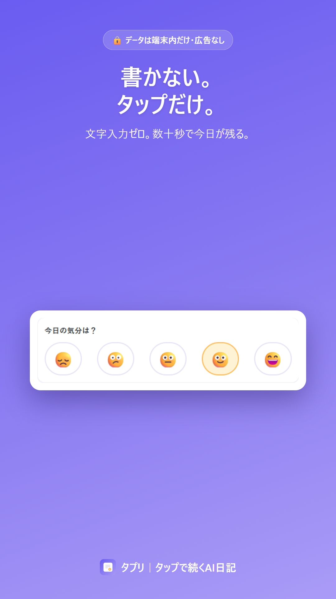
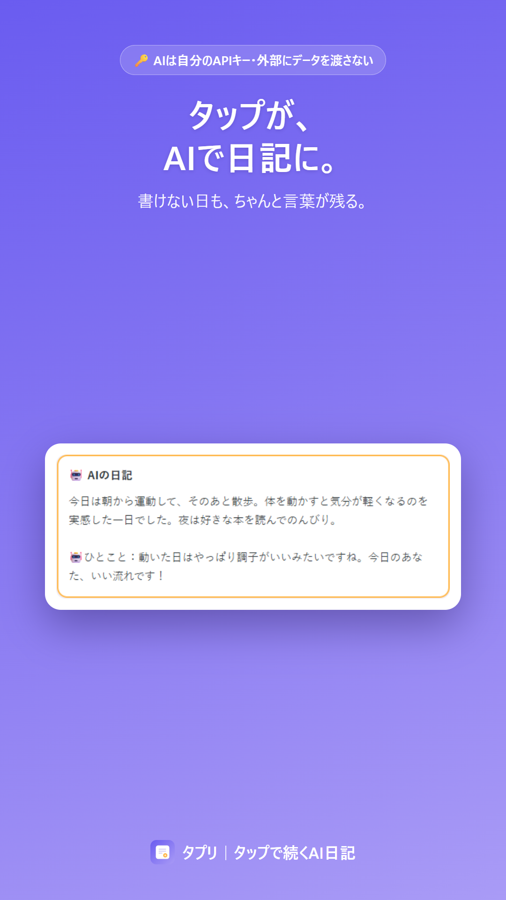
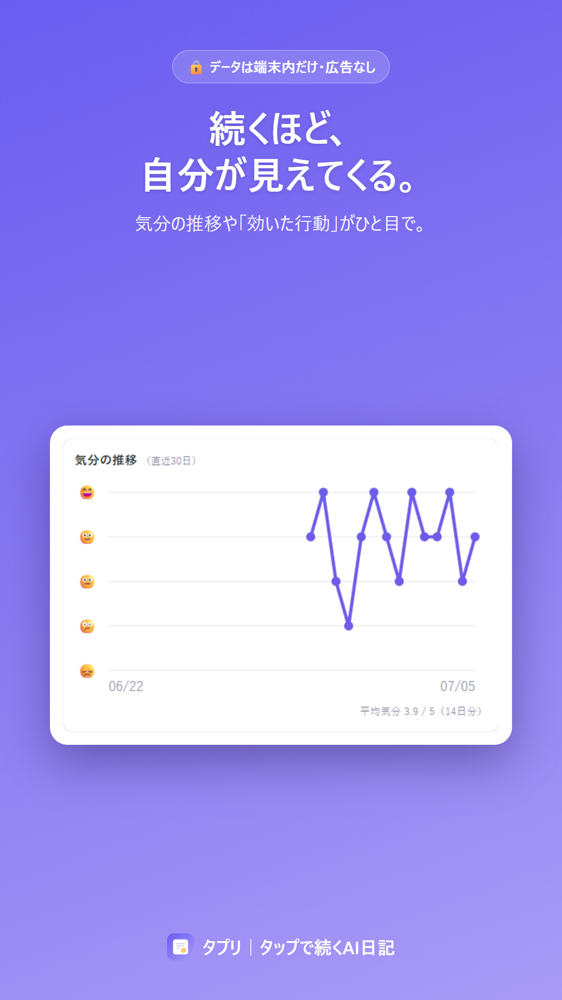
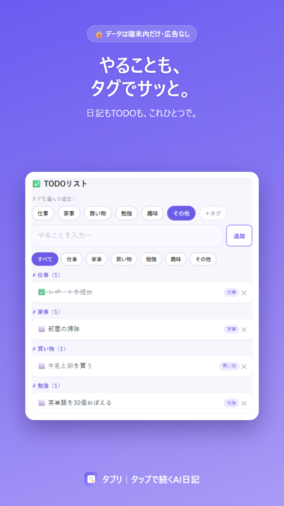

日記が三日坊主だったあなたへ。文字を書かずに、タップだけで1日が残る。AIがその日の日記にまとめてくれます。

「今日こそ書こう」と思っても、三日で止まる。
続かないのは、意志が弱いからじゃない。“書く”のがしんどいだけ。
タプリは、書かない日記です。
気分・睡眠・お金・行動…ぜんぶボタン。1項目ずつ進むから、迷わず数十秒。
文字入力ゼロ。気分や行動をタップするだけで、今日の記録が残せます。
タップした記録から、AIがその日の日記とひとことを生成。書けない日も言葉が残る。（任意）
気分の推移や「何をした日は機嫌がいいか」の相関がひと目で。
連続記録・レベル・節目のお祝い。うっかり抜けても守る「フリーズ」つき。
日記はいちばん見られたくないもの。だから、外に出しません。
記録はすべてあなたの端末の中に保存。私たちのサーバーには送りません。広告なし・トラッキングなし・アカウント登録なし。
AI日記はあなた自身のAPIキー経由。外部にデータを集められる心配なく、自己管理の範囲で安心して使えます。使うかどうかも自由。
← 横にスクロール →



